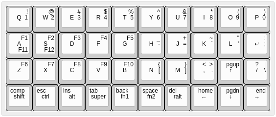
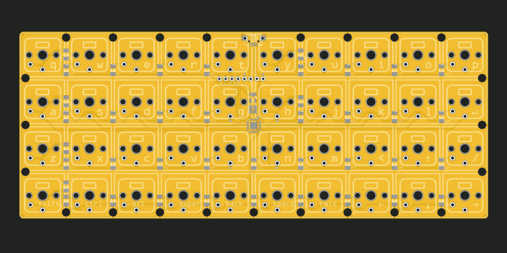
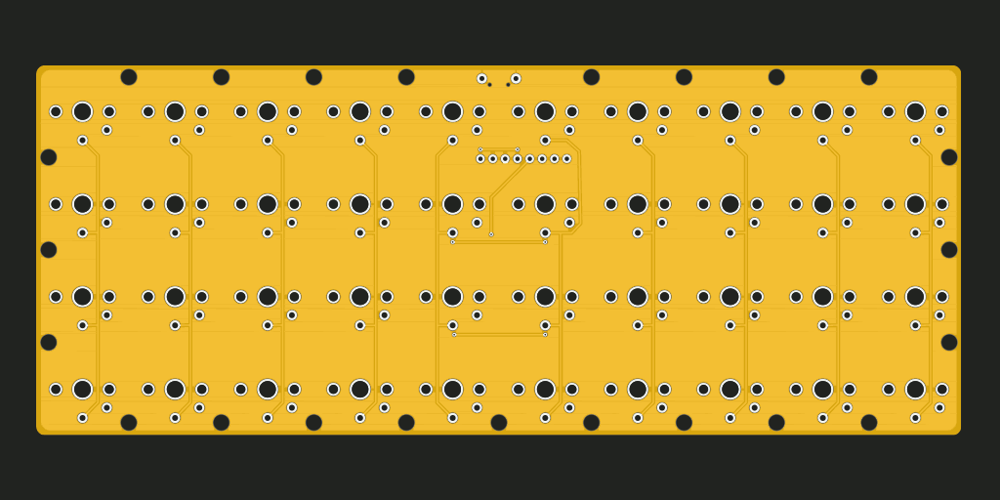

It’s That Time of the Year Again¶
Published on 2020-08-01 in Dorsch 40k Keyboard.
Every year near the end of summer I get a sudden urge to get a new computer keyboard. This year it came earlier. It used to be that I would scour the Internet for the available keyboards in my price range, or visit brick-and-mortar computer shops to try the keyboards in person. But some three or four years ago I started making my own keyboards, and so now instead of lamenting the lack of good keyboards on the market, I can lament the price of the mechanical keyboard switches.
One secret to avoid breaking the bank is to build small keyboards — ones that have as few keys as possible. This is probably why the mechanical keyboard community is full of those chocolate-bar-shaped little designs. So, if I must make one again, let’s make it minimalist. I also decided to avoid any large keys — as stabilizers for them are a huge problem, keep the standard 0.75” key spacing, and generally make everything as simple as possible.
I started with the venerable Plack layout, and tried to make it even smaller. I removed the two extra columns from both sides of the keyboard, and moved the keys to the bottom row, making them share the physical key with the modifiers. The reasoning is that you very rarely use a modifier key on its own, so I can make those keys work as modifiers when pressed together with other keys, but generate normal key presses when pressed and released on their own. There are some timing issues involved, but I think I will be able to make that work.
Another change I made was to move the arrow keys into their traditional inverted-T shape. Finally I added the right alt (because I need it for the Polish keyboard layout) and CapsLock (which is mapped to Compose), and that’s the result:
Next I had to decide what switches to use. Initially I was tempted to finally test the Kailh laptop X switches, but after looking at the price (nearly $2 a piece), I decided that’s a little bit too much, and defaulted to the Kailh Chocolate White switches, together with a set of key caps for them. Having those on order, I proceeded to design the PCB.
I already had the footprint made for Fritzing, so it was just a question of arranging and connecting all the pieces:
 If you look closely, you will notice that the USB port overlaps with two of the switches. The plan is to see if I can modify the switches to make room for the port, and if not, then instead solder a USB cable directly to the headers below, skipping the port completely. I didn’t want any part of the PCB to stick out of the outline of the keys.
I still have five GPIO pins available for easy routing (and two in harder to access places, plus two programming pins I could possible re-use), so I’m considering adding LEDs under the modifier keys.